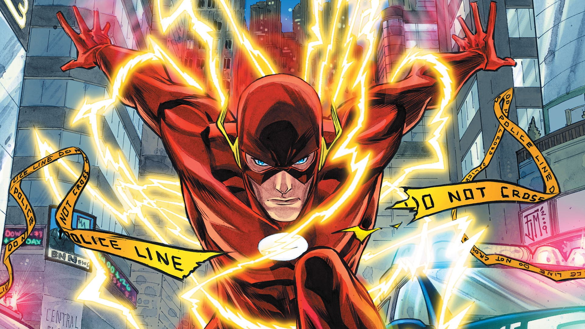
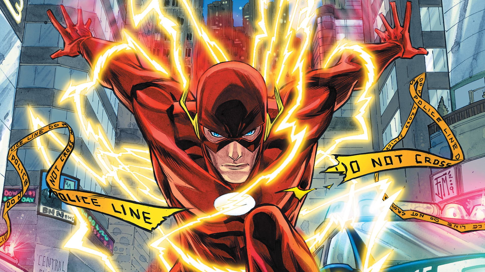

 

...Flash
Real name
Barry Allen
Powers
super speed, intangibility, superhuman agility...
Area Of Operation
Central CityCharacter Facts
Young Barry Allen's life stopped the minute his mother was murdered. The true killer never found, its mystery obsessed Barry, driving him to become a forensic scientist. Consumed by his work, he spent his life chained to his desk, solving every case that flew across it. But when a freak lightning bolt hits a nearby shelf in his lab, Barry receives super-speed, becoming the Flash.